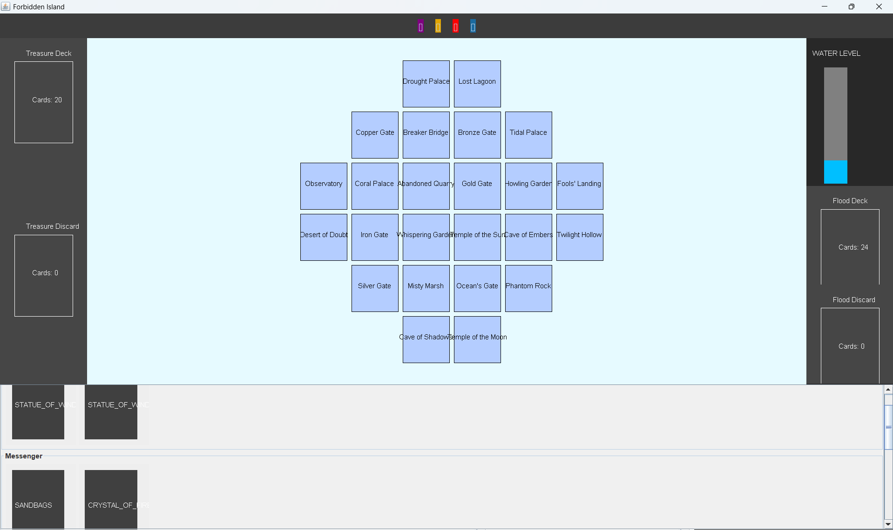
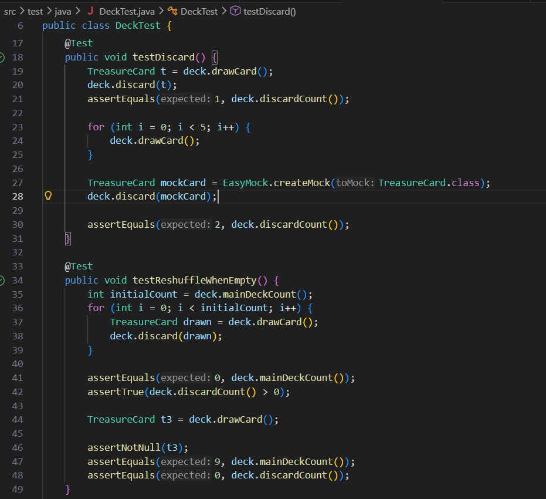
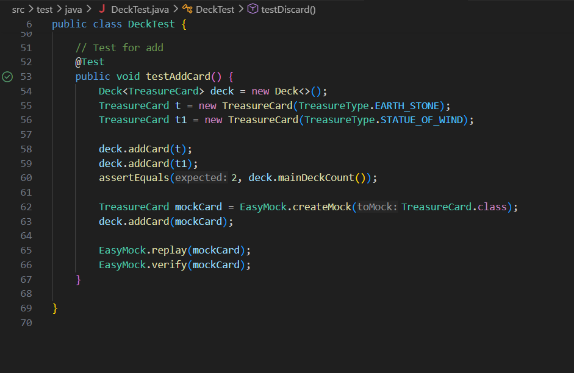

Portfolio
Personal Portfolio Website
HTML, CSS, JavaScript | 2026
Designed and developed a personal portfolio website to showcase my projects, skills, and experience. Focused on responsive design to ensure usability across devices and incorporated accessible web practices. Implemented navigation, content sections, and interactive features using HTML, CSS, and JavaScript.
- Built responsive layouts with Flexbox and CSS Grid for multiple screen sizes.
- Structured semantic HTML for accessibility and search optimization.
- Added dynamic elements like interactive menus and project galleries using JavaScript.
- Organized project content with images, descriptions, and GitHub links.
Forbidden Island Board Game (TDD Implementation)
Java, Test-Driven Development | 2026
Collaborating with a team, I am implementing the Forbidden Island board game in Java using Test-Driven Development (TDD). The project emphasizes rigorous code quality, automated testing, and full implementation of game rules through a graphical user interface (GUI).
Key learning outcomes and accomplishments include:
- Applying TDD and Behavior-Driven Development (BDD) workflows to ensure reliable, maintainable code.
- Achieving high code coverage with unit tests, mutation testing, and continuous verification of correctness.
- Implementing all game mechanics, including win/loss conditions, player actions, and scoring logic.
- Designing a GUI that allows the game to be fully playable, with clear feedback on game state and results.
- Supporting multiple locales for text and game elements, demonstrating scalable internationalization practices.
- Collaborating with team members using Git for version control, code reviews, and merge requests.



RISC-V Assembler
Python | Dec 2025
Collaborated with a team to develop a multi-pass assembler that converts RISC-V assembly code into 32-bit machine instructions. Implemented instruction encoding, label resolution, and pseudo-instruction expansion.
Contributed to unit-test–driven validation and debugged edge cases to ensure correctness. Developed using Python in VS Code.


Self-Balancing Tree
Java
Designed and implemented a self-balancing tree using recursive node-based logic. Supported insertion, deletion, search, and traversal while maintaining balance invariants.
Analyzed performance using Big-O notation and developed unit tests to validate balancing behavior and runtime efficiency. Built using Java in Eclipse.

More Projects
Explore additional work and code samples on my GitHub:
View GitHub